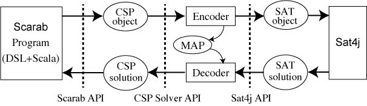
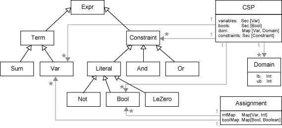
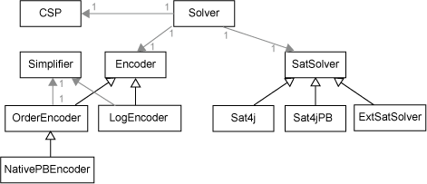

| Home | Examples | Documents | Advanced Usage | Tutorial | Apps |
This web page details Scarab system which is a prototyping tool for developing SAT-based systems. It provides a rich constraint modeling language on Scala and enables a programmer to rapidly specify problems and to experiment with different modelings.

val csp = new CSP() val satSolver = new Sat4j() val encoder = new OrderEncoder(csp,satSolver) val solver = new Solver(csp,satSolver,encoder)
T ::= V | -T | T + Int | T + T | T - Int | T - T | T * Int | Sum(V, ...) | Sum(Seq(V, ...))
V ::= Var(String, String, ...) | V(Any, ...)
C ::= B | T op T | !C | C && C | C || C | alldiff(Seq(T, ...)) |
And(C, ...) | And(Seq(C, ...)) | Or(C, ...) | Or(Seq(C, ...))
op ::= <= | < | => | > | === | !==
B ::= Bool(String, String, ...) | B(Any, ...)


Created: 2019-02-11 月 15:33